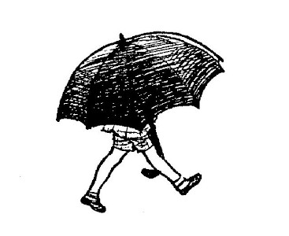

Hooray!" you shouted.
"Isn't that fine?" shouted Winnie-the-Pooh down to you. "What do I look like?"
"You look like a Bear holding on to a balloon," you said.
"Not," said Pooh anxiously, "—not like a small black cloud in a blue sky?"
"Not very much."
"Ah, well, perhaps from up here it looks different. And, as I say, you never can tell with bees."
There was no wind to blow him nearer to the tree, so there he stayed. He could see the honey, he could smell the honey, but he couldn't quite reach the honey.
After a little while he called down to you.
"Christopher Robin!" he said in a loud whisper.
"Hallo!"
"I think the bees suspect something!"
"What sort of thing?"
"I don't know. But something tells me that they're suspicious!"
"Perhaps they think that you're after their honey."
"It may be that. You never can tell with bees."
There was another little silence, and then he called down to you again.
"Christopher Robin!"
"Yes?"
"Have you an umbrella in your house?"
"I think so."
"I wish you would bring it out here, and walk up and down with it, and look up at me every now and then, and say 'Tut-tut, it looks like rain.' I think, if you did that, it would help the deception which we are practising on these bees."
Well, you laughed to yourself, "Silly old Bear!" but you didn't say it aloud because you were so fond of him, and you went home for your umbrella.
Winnie-the-Pooh
A. A. Milne
Ernest H. Shepard
January 3, 2022 [EBook #67098]